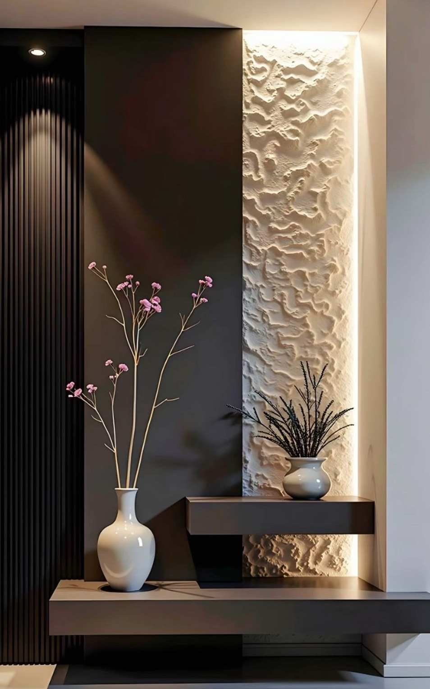

About Armani.
Armani Interiors works with homeowners and businesses in Cape Town to plan and style spaces that look good and work well. From room layouts to finishes and furniture, the choices are guided by the property, the brief and the people who use it.

Good design is in the details.
We look at the room as a whole: how you move through it, where the light falls, what needs to be stored and which pieces are worth keeping. Furniture, colour, lighting and finishes should make sense together.
Some projects call for calm colours and natural timber; others suit stronger contrast, stone or metallic details. We choose a direction to suit your taste and the building, rather than forcing every space into the same style.
A style that suits the space.
No two briefs are quite the same. We start with what you need, what you like and what the space can support, then build a look around those things.
Choose materials well
Stone, timber, panels, fabric and metal details all affect how a room looks and wears over time. We consider them early, not as last-minute extras.
Comfort matters
A room has to work beyond the photos. We think about circulation, comfortable seating, useful storage, lighting and the routines that happen there.
Different spaces, different needs
A family home, a salon and an office have different needs. The colours, finishes and layout should reflect that.
Practical from the start
We keep installation, maintenance and durability in mind when choosing details, so the finished space is practical as well as attractive.

Inspired by Cape Town.
Cape Town’s light, stone, timber and textured surfaces are a natural source of inspiration. They can shape a design without every project needing to look coastal or neutral.
If the property has a patio or terrace, we can also look at how the outdoor area connects with the rooms inside.